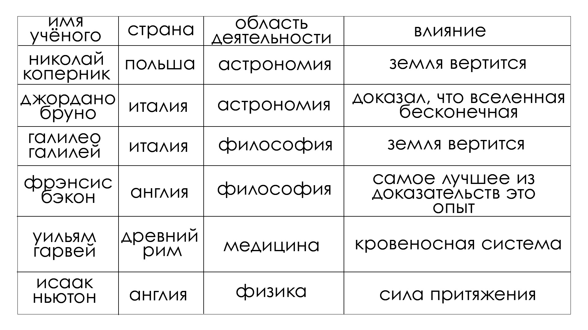

1.Найдите лишнее имя и вычеркните его |
а) |
2.Укажите событие, связанное с утверждением "И всё-таки она вертится!" |
в) |
3.Закончите предложение. |
Создание парового двигателя, более точных карт, усовершенствование огнестрельного оружия базировалась на научных идеях знаменитого английского учёного Исаака Ньютона. |
4.Заполните пропуски в предложении, указав недостающие элементы научного метода исследования. |
Сначала тщательное наблюдение и эксперимент, затем объяснение эксперимента и наблюдений с помощью разума и взавершение научные гипотезы (теории), подтверждённые математически. |
5.Объясните,как вы понимаете знаменитый афоризм Фрэнсиса Бэкона "Знание-сила" |
Если у тебя есть нужные и полезные знания - то ты можешь достичь своей цели. |
6.заполните таблицу "Основные научные идеи XVI - XVII вв." |
|  |
7.Ответьте на проблемные вопросы. |
1.Потому что в это время великие учёные это открывали. |
2.О том что у Земли есть сила притяжения и она вертится вокруг своей оси. |
3.Я думаю что были противоречия, потому что наука отрицает существование божества, а католическая церковь в те времена дажее жестоко преследовала учёных. |